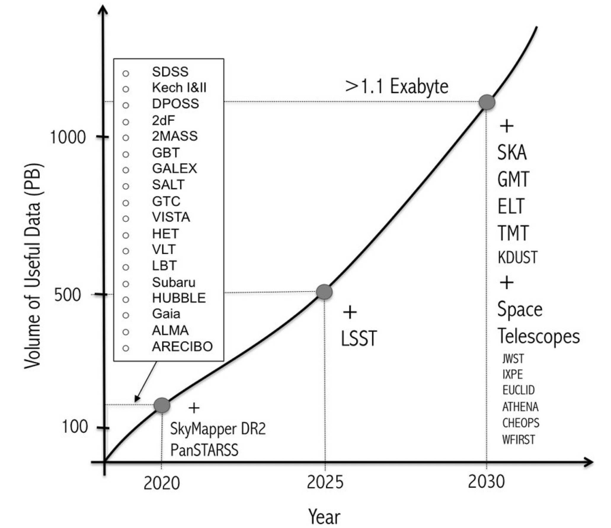
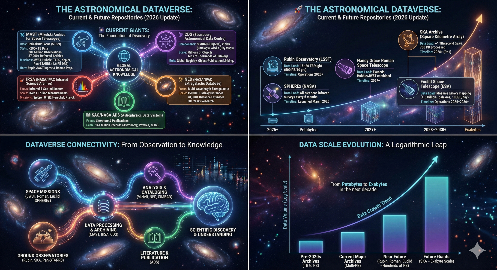
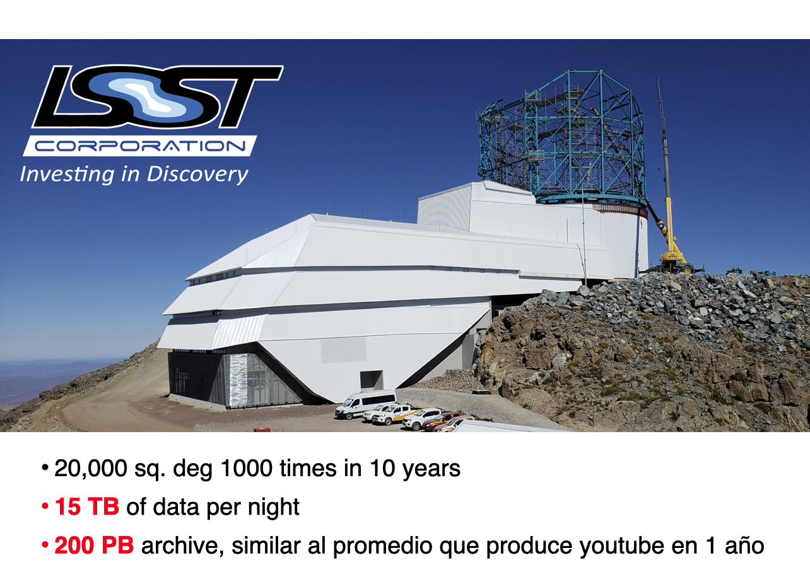
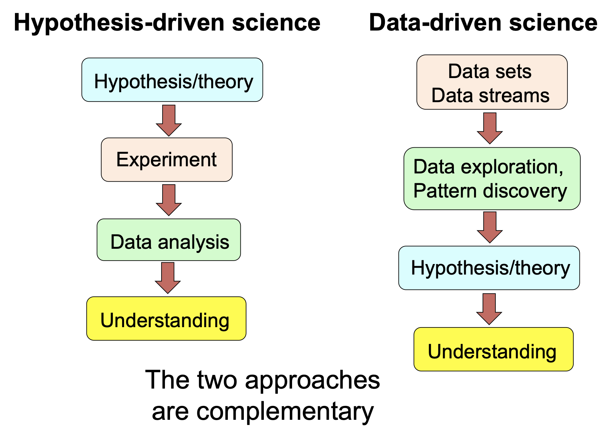

Clase 1: La Consola de Comandos (Bash)#
Objetivos del curso#
Entender qué es la minería de datos en el contexto astronómico.
Familiarizarse con el entorno de control de versiones, usos de Google Colab y herramientas de machine learning.
Conocer y manejar algunas bases de datos de Astronomía
Evaluación del curso#
Proyectos mensuales (4: 10%-20%-10%-20%) con fechas de entrega 23 de marzo, 20 de abril, 18 de mayo y 15 de junio.
Proyecto final (1x40%) con fecha de entrega el 1o de junio. Esta evaluación se dividirá en 30% proyecto y 10% examen oral de 10 minutos.
Importante - Declaración de uso de IA generativa: Cada entrega de proyecto debe incluir una declaración de uso ético de IA generativa según los lineamientos del artículo https://link.springer.com/article/10.1186/s41077-025-00350-6
Horario del curso y aula de clase#
El horario del curso será los lunes y miércoles de 2 a 4 de la tarde
El aula para el curso será la 5-104
Resumen de la información#
Dato |
info |
|---|---|
Profesores |
1. Germán Chaparro Molano (german.chaparro@udea.edu.co) |
2. Esteban Silva Villa (esteban.silvav@udea.edu.co) |
|
Evaluación |
Proyecto mensual (4x10%) |
Proyecto final (1x60%) |
|
Aula |
5-104 |
Horario |
LW 2-4PM |
Por qué la relevancia de este curso#
Las bases de datos en Astronomía se han estado cosntruyendo desde que se comenzó el estudio de la posición en el cielo (por ejemplo el catálogo de Hipparco, catálogo de Tycho, entre otros).
Luego de la llegada de las cámaras fotográficas a finales del siglo XIX los catálogos comenzaron a tener una mayor cantidad de datos.
Pero su apogeo surge a partir de la llegada de los computadores y las cámaras digitales a partir de mediados del siglo XX.
Al día de hoy los cátalogos incluyen tamaños de datos que están llegando a los Petabytes incluso Exabytes.


Queramos o no, se ha venido dando un cambio en el paradigma sobre cómo se desea desarrollar procesos investigativos a nivel mundial.
El método científico no se ve afectado por este cambio, pero el proceso tiene variantes que pueden modelar estrategias nuevas en la forma como se hace investigación.
Eso no implica, de ninguna manera, que el rigor científico se pone en juego. Simplemente quiere decir que se está cambiando la forma de desarrollar los procesos.


Imagen tomada de: https://events.asiaa.sinica.edu.tw/school/20170904/talk/djorgovski1.pdf
Objetivos de hoy#
Aprender a navegar por el sistema de archivos desde la terminal.
Crear, mover y borrar archivos.
Usar herramientas de CLI para procesar texto básico.
Generación de scripts básicos.
2. Creando Estructura#
Vamos a crear un directorio para nuestros datos.
!mkdir datos_astronomia
!cd datos_astronomia && echo "Estamos dentro de la carpeta" # Nota: cd solo afecta a la línea actual en Colab
mkdir: datos_astronomia: File exists
Estamos dentro de la carpeta
3. Manipulación de Archivos#
Vamos a crear un archivo simulado de datos astronómicos.
!sh ran_gen_data.sh
🚀 Iniciando generación de 100000 registros...
⏳ Esto puede tomar unos segundos...
✅ Archivo generado exitosamente: server_data_large.csv
📊 Tamaño: 4.1M
📝 Líneas totales: 100001
🔍 Primeras 5 líneas:
ID,Tipo,Mag,Prob,RA,DEC
1,Ruido,14.06,93,03:08:11,+22:59:23
2,Quasar,19.55,22,21:29:27,+60:19:06
3,Ruido,14.81,15,08:26:15,+71:55:16
4,Variable_Star,13.67,58,10:47:47,-23:55:56
!awk -F',' '{if ($3 < 15) print $1,$3}' server_data_large.csv| tail -10
99970 13.52
99972 12.18
99974 14.34
99982 14.32
99984 13.32
99986 12.22
99989 13.54
99994 13.62
99995 14.40
99997 13.31
texto_datos = """
ra,dec,magnitude,obj_type
10.5,45.2,15.4,STAR
10.6,45.3,18.2,GALAXY
11.0,44.9,12.1,STAR
11.2,46.1,19.5,QSO
10.4,45.0,16.0,STAR
"""
with open('catalogo_pequeno.csv', 'w') as f:
f.write(texto_datos)
!cat catalogo_pequeno.csv
ra,dec,magnitude,obj_type
10.5,45.2,15.4,STAR
10.6,45.3,18.2,GALAXY
11.0,44.9,12.1,STAR
11.2,46.1,19.5,QSO
10.4,45.0,16.0,STAR
4. Filtrando con Grep#
Imagina que solo queremos ver las estrellas (STAR) de este archivo CSV sin usar Python, solo Bash.
!grep "STAR" catalogo_pequeno.csv
10.5,45.2,15.4,STAR
11.0,44.9,12.1,STAR
10.4,45.0,16.0,STAR
Podemos contar cuántas galaxias hay usando wc -l (word count lines).
!grep "GALAXY" catalogo_pequeno.csv | wc -l
1
Cheatsheet#
Muchas veces se encontrarán con que es difícil poder conocer todos los comandos que se necesitan para realizar alguna de las actividades que se desea construir.
Existen lo que se conoce como cheatsheet o como hojas de trampa. Son generalmente un resumen de las cosas más importantes que se deben conocer respecto a una herramienta específica.
Para el CLI les dejamos por acá una de esas: LINK
Ejercicio en Clase#
Usa comandos de bash para resolver los siguientes problemas:
Problema 1#
Copiar y pegar el siguiente texto en una consola de comandos:
cat << EOF > objetos_messier.csv
M1,Remanente_Supernova,Tauro
M13,Cumulo_Globular,Hercules
M31,Galaxia_Espiral,Andromeda
M42,Nebulosa,Orion
M45,Cumulo_Abierto,Tauro
M51,Galaxia_Espiral,Canes_Venatici
M57,Nebulosa_Planetaria,Lyra
M82,Galaxia_Irregular,Osa_Mayor
M87,Galaxia_Eliptica,Virgo
M104,Galaxia_Espiral,Virgo
EOF
Objetivo: Aprender a “recortar” columnas, ordenar datos y contarlos automáticamente.
Herramientas: cut, sort, uniq.
Escenario: Tienes el archivo objetos_messier.csv. No te interesa el nombre del objeto (M1, M13…), solo quieres saber cuántos objetos de cada Constelación hay en tu lista para planear hacia dónde apuntar el telescopio.
El Pipeline a construir:
Leer el archivo.
Cortar (cut) el archivo para quedarte solo con la columna 3 (La constelación). El separador es la coma (,).
Ordenar (sort) alfabéticamente la lista de constelaciones (esto es obligatorio para el siguiente paso).
Usar uniq -c para contar las repeticiones.
# Escribe tu código bash aquí
Problema 2#
Copiar y pegar el siguiente texto en una consola de comandos:
cat << EOF > observacion_jueves.txt
# PLAN DE OBSERVACION - TELESCOPIO 1m
# FECHA: 2026-02-19
# OBSERVADOR: ESTUDIANTE 1
# ------------------------------------
Vega 0.03 Visible
Arcturus -0.05 Visible
Sirius -1.46 Visible
Canopus -0.74 Oculto
Rigel 0.13 Visible
Procyon 0.34 Oculto
Betelgeuse 0.50 Nubes
EOF
Objetivo: Filtrar filas específicas y guardar el resultado en un archivo nuevo.
Herramientas: grep, sort, > (redirección).
Escenario:
El archivo observacion_jueves.txt tiene comentarios al principio (líneas que empiezan con #) que molestan a tu software de análisis. Además, hay objetos que están “Ocultos” o con “Nubes”.
Tu tarea es generar un archivo limpio llamado lista_final.txt que contenga únicamente los objetos que están marcados como “Visible”, y ordenados alfabéticamente.
El Pipeline a construir:
Buscar en el archivo solo las líneas que contengan la palabra “Visible”.
(Opcional pero recomendado) Ordenar la lista alfabéticamente.
Guardar el resultado en lista_final.txt usando el símbolo de “flecha” (>).
Verificar el contenido del nuevo archivo.
# Escribe tu código bash aquí
Problema 3#
Copiar y pegar el siguiente texto en una consola de comandos:
cat << EOF > galaxias_locales.csv
ID,Tipo,Distancia_Mpc
Andromeda,Espiral,0.78
Triangulum,Espiral,0.84
Nube_Magallanes_Mayor,Irregular,0.05
Nube_Magallanes_Menor,Irregular,0.06
Enano_Canis_Major,Irregular,0.01
Centaurus_A,Eliptica,3.80
M81,Espiral,3.62
Sombrero,Espiral,9.55
EOF
cat <<EOF > candidatos_exoplanetas.csv
ID_Estrella,Estado_Alerta
Kepler-10,Confirmado
Kepler-11,Falso_Positivo
Kepler-22,Confirmado
TESS-obj1,Candidato
TESS-obj2,Confirmado
TESS-obj3,Falso_Positivo
Kepler-452,Confirmado
TESS-obj4,Candidato
EOF
Objetivo: Encadenar múltiples herramientas (grep, sort, head, wc) y ejecutar secuencias de comandos independientes en una sola línea utilizando separadores (;).
Herramienta nueva: echo (para imprimir mensajes en pantalla) y ; (para separar comandos).
Escenario: Es tu turno de iniciar operaciones en el observatorio. Antes de abrir la cúpula, necesitas generar un “Reporte Rápido” en la pantalla que te diga dos cosas inmediatamente:
Cuáles son los 3 objetivos extragalácticos más cercanos que podrías observar.
Un resumen rápido de cuántas alertas de exoplanetas fueron confirmadas por el software anoche.
¡Y quieres que la terminal haga todo esto presionando “Enter” una sola vez!
El Pipeline a construir:
Imprimir un título descriptivo usando echo.
Ejecutar la secuencia de filtros para obtener las 3 galaxias más cercanas.
Imprimir otro título descriptivo.
Ejecutar la secuencia para contar los exoplanetas confirmados.
Nota: Todo debe ir conectado por el símbolo punto y coma (;), que le dice a la terminal: “Ejecuta esto, y cuando termines, ejecuta lo siguiente”.
# Escribe tu código bash aquí
Problema 4#
Tu equipo recibe actualizaciones diarias del catálogo de exoplanetas. Tu tarea rutinaria es:
Descargar la nueva base de datos.
Extraer únicamente los planetas descubiertos por el método de “Tránsito”
Ordenarlos para facilitar su lectura.
Generar un conteo rápido de cuántos planetas pasaron el filtro.
crear un archivo
.shque se ejecute automáticamente.
Nota: Debe/puede usar los comandos wget, cat, grep, sort, wc y tuberías (|).
# Escribe tu código bash aquí
Problema 5#
Usar la base de datos pública anterior para construir una pipeline (archivo .sh) que:
Descargue los datos: Usar wget para traer el archivo planets.csv.
Análisis y Presentación:
Cortar la primera columna.
Eliminar la palabra del encabezado.
Ordenar alfabéticamente para agrupar.
Contar las apariciones.
Ordenar numéricamente de mayor a menor.
Mostrar solo los primeros 5 resultados.
Nota: Debe/puede usar los comandos wget, cat, grep, sort, wc y tuberías (|).
# Escribe tu código bash aquí
Problema 6#
La siguiente base de datos es una recopilación de meteoritos que entraron a la atmósfera terrestre:
Cuáles columnas contiene la base de datos?
Organizar los datos por fecha.
Contar cuántos eventos se presentaron por año.
Cuáles fueron los 5 eventos más potentes?
Nota: Debe/puede usar los comandos wget, cat, grep, sort, wc y tuberías (|).
# Escribe tu código bash aquí
Problema 7#
El siguiente link contiene información sobre estrellas, incluyendo algunas de ellas con clasificación espectral:
Cuántas estrellas hay en el archivo y cuántas tienen clasificación espectral reportada?
Cuántas de hay de cada una de las clasificaciones espectrales?
Cuántas estrellas hay que tenga el mismo tipo espectral que nuestro Sol?
Cuántas estrellas con tipo espectral F están en sistemas binarios?
Cree un script
.shque automatice todo el proceso.
Nota: Debe/puede usar los comandos wget, cat, grep, sort, wc y tuberías (|).
# Escribe tu código bash aquí